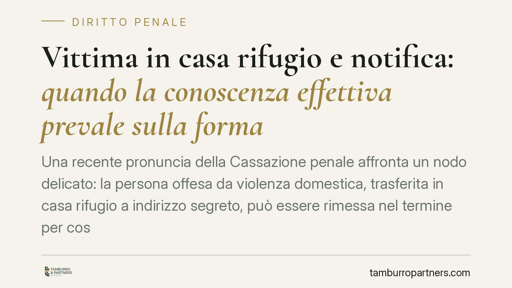

Vittima in casa rifugio e notifica: quando la conoscenza effettiva prevale sulla forma
Una recente pronuncia della Cassazione penale affronta un nodo delicato: la persona offesa da violenza domestica, trasferita in casa rifugio a indirizzo segreto, può essere rimessa nel termine per costituirsi parte civile quando la notifica, pur formalmente regolare, non le ha assicurato conoscenza effettiva del processo. La forma cede al risultato: sapere davvero che il procedimento esiste.

Il caso
Una donna vittima di violenza domestica viene trasferita in una casa rifugio a indirizzo protetto, per ragioni di sicurezza. Nel frattempo il procedimento penale prosegue. Le notifiche relative all'udienza vengono effettuate secondo le regole ordinarie, ma la persona offesa non ne ha reale contezza: si trova altrove, in una struttura la cui ubicazione è per definizione riservata.
All'esito, la persona offesa non riesce a costituirsi parte civile nei termini. Chiede allora la restituzione nel termine, sostenendo di non aver avuto conoscenza effettiva del procedimento. La questione arriva in Cassazione, che affronta il rapporto tra regolarità formale della notifica e conoscenza reale dell'atto.
*Nota: il numero e la sezione della pronuncia sono in corso di verifica sulle fonti ufficiali (CED, Italgiure). Fino alla conferma, il riferimento resta prudenzialmente generico.*
Inquadramento normativo
Il perno è l'art. 175 c.p.p., che disciplina la restituzione nel termine: chi, per caso fortuito o forza maggiore, non ha potuto compiere un atto entro il termine previsto può essere rimesso nella facoltà di compierlo. In parole semplici: se un ostacolo non imputabile ha impedito di agire, la legge concede una seconda finestra.
Sullo sfondo operano le tutele introdotte a favore della persona offesa dagli artt. 90-bis, 90-ter e 90-quater c.p.p.: obblighi informativi verso la vittima, comunicazioni sulle vicende del procedimento e attenzione specifica per la vittima in condizione di particolare vulnerabilità. Sono norme di garanzia informativa; non fondano di per sé, in modo automatico, la restituzione nel termine, ma esprimono un principio che orienta la lettura dell'art. 175: la vittima deve essere messa nelle condizioni concrete di conoscere e partecipare.
Il principio che emerge è coerente con questo quadro: una notifica formalmente valida non equivale sempre a conoscenza effettiva. Quando la stessa condizione di protezione della vittima — la segretezza del luogo di rifugio — ostacola la ricezione reale dell'atto, la regolarità formale non può tradursi in una decadenza.
Implicazioni pratiche
Le ricadute si distribuiscono su tre fronti.
Per le vittime. Il trasferimento in casa rifugio non deve diventare, paradossalmente, la causa dell'esclusione dal processo. La condizione di protezione non può ritorcersi contro chi la subisce. Chi si trova in questa situazione ha uno spazio argomentativo concreto per chiedere di essere rimesso nel termine, dimostrando che la mancata conoscenza dipende proprio dallo status protetto.
Per i difensori. Cambia il modo di impostare l'eccezione. Non basta invocare la vulnerabilità in astratto: occorre documentare il nesso tra collocazione protetta e mancata conoscenza effettiva. La linea difensiva si sposta dal piano formale (la notifica era regolare?) a quello sostanziale (la persona ha davvero saputo del processo?).
Per gli uffici giudiziari. Emerge l'esigenza di coordinare le modalità di notifica con la condizione della vittima protetta, valorizzando canali che assicurino conoscenza reale — ad esempio attraverso il difensore o i servizi di supporto — anziché limitarsi al rispetto formale delle regole di notificazione.
Un limite va tenuto fermo: la restituzione nel termine non è automatica. Va valutata caso per caso. Occorre allegare e provare che l'impedimento è concreto, riconducibile alla condizione protetta e non imputabile alla persona offesa. Non è una sanatoria generalizzata delle decadenze, ma un correttivo mirato quando la forma tradisce la sostanza.
Cosa fare in concreto
- Documentare da subito il trasferimento in casa rifugio: data, provvedimento, natura protetta della collocazione. È la base fattuale dell'eccezione.
- Indicare un domicilio effettivo per le comunicazioni, tipicamente presso il difensore, così da collegare la persona offesa a un canale che garantisca conoscenza reale.
- Ricostruire il nesso causale tra segretezza del luogo e mancata conoscenza dell'atto: è questo il cuore della richiesta ex art. 175 c.p.p.
- Agire con tempestività una volta appresa l'esistenza del procedimento: la restituzione presuppone diligenza appena l'ostacolo viene meno.
- Verificare gli obblighi informativi ex artt. 90-bis ss. c.p.p.: la loro eventuale omissione rafforza l'argomento della conoscenza mancata.
Conclusione
È opportuno affrontare fin dall'inizio la questione delle notifiche quando la vittima è collocata in struttura protetta, evitando che una tutela pensata per la sicurezza si traduca in una perdita di diritti processuali. Il messaggio della pronuncia è chiaro: ciò che conta non è la casella spuntata, ma la conoscenza reale del processo. Su questo terreno si gioca l'effettività della partecipazione della persona offesa.
Contributo informativo a cura di Tamburro & Partners - Avv. Giuseppe Tamburro. Non costituisce parere legale.
Ogni condominio ha una storia a sé.
Se gestisci un'amministrazione e vuoi un confronto su una specifica questione condominiale, scrivi allo studio. Ti rispondiamo entro un giorno lavorativo.